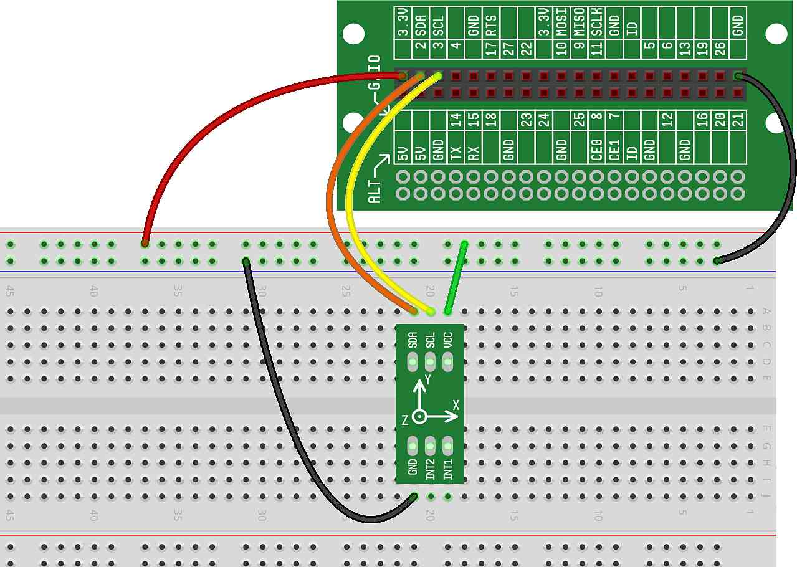

In this project, we will wire up the accelerometer that we introduced in the previous concept and we'll write some code to allow it to measure the orientation of the kit.
Let's wire up your accelerometer and write some code to get it working.
The accelerometer has six pins. It should be inserted into the breadboard such that each pin sits in a different connect strip, and you should ensure that at least one other hole is usable in each connect strip where the accelerometer sits. Like this:
When inserting the accelerometer into the breadboard, don't be afraid to apply some pressure from the top — the bottom of the black plastic connectors should touch the breadboard.
It is very important to note that the power and the ground of the accelerometer must be connected appropriately. If you wire VCC (which is Power) to ground on the breadboard, or if you wire GND to Power on the breadboard, there is a good chance that you will destroy the accelerometer chip (it will likely get warm and start to smoke). So, be extra careful that you hook up the chip as shown below.
With four wires, wire up the accelerometer like this:
Wire GND on the accelerometer to GND on the breadboard.
Wire VCC on the accelerometer to 3.3V power on the breadboard.
Wire SCL on the accelerometer to SCL on the Lid Connector Board.
Wire SDA on the accelerometer to SDA on the Lid Connector Board.
Here is what your breadboard should look like once the accelerometer is properly wired:
Let's write some code to test your accelerometer and see how it works:
Now, let's take a look at what our code is doing:
On Line 1, we import the module we will need to initialize and get
information from the accelerometer (called Accel())
On Line 2, we import the time module, as we're going to be
using a loop and will want to slow the repetition of the loop down a
bit
On Line 4, we initialize our accelerometer. We call the
Accel() function, which returns an "accelerometer object" to
our accel variable. We talked about that a bit in , but the important thing to understand is that we can now use
accel to call other accelerometer functions
On Line 6, we start a loop (this is where we'll spend all of our time once we run the program)
On Line 7, we call the accelerometer function forces(),
which returns three values, representing the forces in the x-direction,
y-direction and z-direction
On Line 8, we print those three values to the screen
On Line 9, we pause briefly (so we don't overwork the processor) and then return to the top of the loop where we read the new values from the accelerometer
If you run your test code, what you should immediately see is that your Program Output window starts filling up with numbers. There are three numbers on each line, and those numbers correspond to the values of the X, Y and Z forces.
If you sit your CREATOR Kit down on a flat surface, you should expect the first number to be very close to 0, the second number to be very close to 0 and the third number to be very close to 1. While you might expect the numbers to be exactly 0, 0 and 1, in reality, the accelerometer is very sensitive, and it's unlikely that your surface is 100% flat, so you'll probably see readings that are very slightly off from those numbers.
Play around with the CREATOR Kit and try to get a feel for how different movements and rotations affect the numbers on the screen. In future projects, we'll be using this functionality to turn the CREATOR Kit into a game controller.
Instead of printing the X, Y, and Z forces, can you print (just for the X forces) a single "*" for each tenth greater than zero? For example, if the force is .4xxxx, you would print "****". If the force is .7xxxx, you would print "*******". This should give you a good visualization of how the values change as the kit is moved.
Can you do the same as above for the Y and Z forces as well?